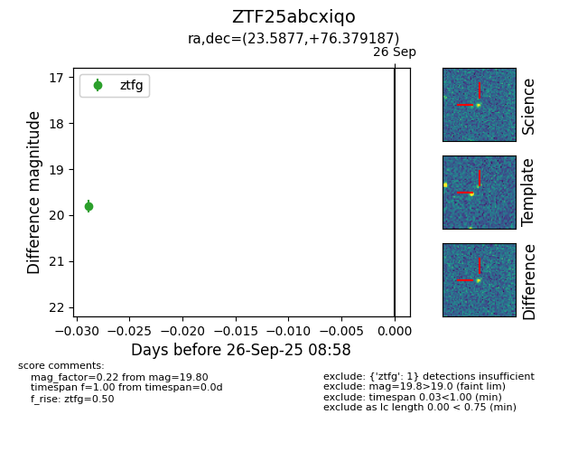

FINK: ZTF25abcxiqo
Lasair: ZTF25abcxiqo
ALeRCE: ZTF25abcxiqo
ZTF25abcxiqo (ztf,fink)
equatorial (ra, dec) = (23.5877,+76.37919)
galactic (l, b) = (125.5183,+13.72340)

last ztfg=19.80
1 ztfg detections